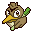
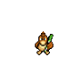
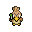

Pokédex / #083

Farfetchd #083
NormalFlying
It always walks about with a plant stalk clamped in its beak. The stalk is used for building its nest.
Generation 1 · Kanto

Stats
| Attack | 65 | |
|---|---|---|
| Defense | 55 | |
| Sp. Atk | 58 | |
| Sp. Def | 62 |
In the wild
| Wild level | 40–50 |
|---|---|
| HP | 52 |
| Experience | 12 |
| Egg groups | Flying, Field |
Evolution
- Does not evolve.
Moves
| Level | Move | Type | Category | Power | Energy | Cooldown | Effect | |
|---|---|---|---|---|---|---|---|---|
| 1 | Tackle | Normal | Physical | 15 | 15 | 1s | Tackle is one of the most common and basic moves a Pokemon learns. It deals damage with no additional effects. | |
| 5 | Poison Jab | Poison | Physical | 80 | 80 | 12s | Poison Jab inflicts damage and has a 30% chance of poisoning the target. | |
| 10 | Sand-Attack | Ground | Status | – | 25 | 10s | Sand-Attack lowers the target's Accuracy by one stage. | |
| 15 | Fury Attack | Normal | Physical | 15 | 45 | 9s | Fury Attack does damage, hitting 2-5 times per use. | |
| 20 | Aerial Ace | Flying | Physical | 60 | 60 | 14s | Aerial Ace deals damage and ignores changes to the Accuracy and Evasion stats. | |
| 25 | Wing Attack | Flying | Physical | 60 | 70 | 14s | Wing Attack inflicts damage and has no secondary effect. | |
| 30 | Roost | Flying | Status | – | 90 | 120s | User recovers half of its max HP. Flying types temporarily lose Ground type immunity. | |
| 35 | Slash | Normal | Physical | 70 | 70 | 11s | Slash deals damage and has an increased critical hit ratio. | |
| 40 | Air Cutter | Flying | Special | 60 | 70 | 13s | Air Cutter deals damage and has an increased critical hit ratio. | |
| 45 | Acrobatics | Flying | Physical | 55 | 55 | 13s | Acrobatics deals damage and has no secondary effect. | |
| 50 | Air Slash | Flying | Special | 75 | 80 | 17s | Air Slash deals damage and has a 30% chance of causing the target to flinch. | |
| 55 | Agility | Normal | Status | – | 80 | 20s | Agility raises the user's Speed by two stages. | |
| 60 | Mirror Move | Flying | Status | – | 130 | 25s | Mirror Move copies the target's last move. If there isn't a last move, copy random. | |
| 65 | Brave Bird | Flying | Physical | 120 | 125 | 27s | The user tucks in its wings and charges from a low altitude. This also damages the user quite a lot. | |
| 70 | Swords Dance | Normal | Status | – | 100 | 60s | Swords Dance raises the user's Attack by two stages. |
Field abilities
FindCutFlyHeadbutt
Special abilities
Keen EyeInner Focus
Egg moves
CovetCurseFeather DanceFlailForesightGustLeaf BladeMirror MoveMud-SlapNight SlashQuick AttackRevengeRoostSimple BeamSteel WingTrump Card
Technical machines
Aerial AceBideBody SlamDouble EdgeDouble TeamHeadbuttIron TailMimicMud SlapPoison JabRageRazor WindReflectRestSkull BashSoftboiledSteel WingSubstituteSwiftSwords DanceTake DownToxicWhirlwind
Drops
| Item | Amount | Chance | |
|---|---|---|---|
| bunch of wheat | 1–4 | 83.3% | |
| feather | 1 | 55.6% | |
| downy feather | 1 | 25% | |
| colourful feather | 1 | 10% | |
| red apple | 1–5 | 5% | |
| royal feather | 1 | 3.33% | |
 | farfetchd doll | 1 | 0.1% |
| Love Plate | 1 | 0.05% | |
| Sky Plate | 1 | 0.05% | |
| held sharp beak | 1 | 0.01% | |
| held silk scarf | 1 | 0.01% |